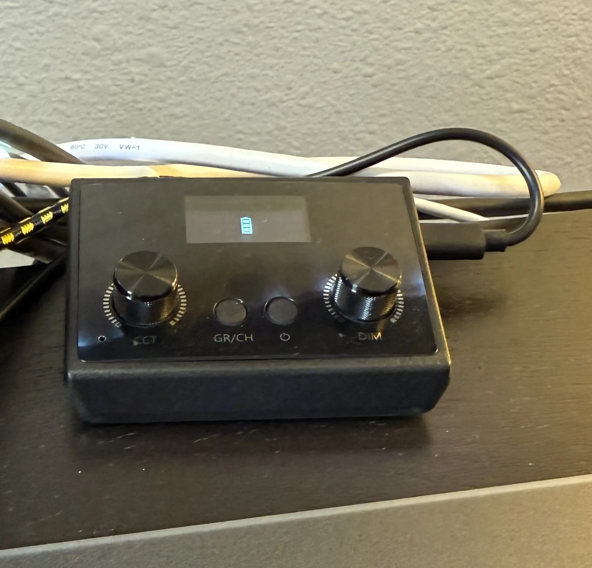

Disclosure Some links on this page are affiliate links. If you buy through them, Owen Miner may earn a commission at no extra cost to you. That support helps fund content on this website and social media. As an Amazon Associate I earn from qualifying purchases.

This key light serves a couple of really important purposes for me.
The main purpose of this key light is to provide artificial day light for purposes of energy and focus. I'm a big fan of the Huberman Lab Podcast and one major point he hammers home is getting adequate light in your eyes to stimulate your bodies natural response to be awake.
Of course the second purpose of this key light is to provide lighting for photos/videos and it does a really good job
The Godox ES45 comes with a portable remote with knobs to control the brightness and color temperature that sits on my desk and is powered by micro usb.
I also have this light setup with a wifi enabled outlet that automatically turns on at the same time of my alarm to wake up. Having a bright light is very helpful for waking up in the morning.